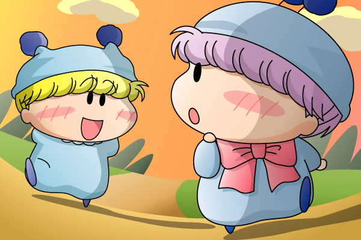

２００５年５月にムルモ屋本舗の掲示板上で行いました企画第２弾『あなたが選ぶベストわんだほうミュージックは？』の結果をまとめましたので、本記事にて報告します(^^)。
■ルール
２００４年４月～２００５年３月末までに発売されたミルモCDでお気に入りの歌／曲を５位、４位、３位、２位、１位の順に５つ選びます。皆様からの投票により各キャラに以下のpointが加算され、最もpointの高い歌をムルモ屋本舗におけるベストわんだほうミュージックと認定します。
なおキャラソンは全員が全曲知っているわけではないので、今回は主題歌とキャラソンとで集計を別にしました。
| １位 … 10point |
| ２位 … 8point |
| ３位 … 6point |
| ４位 … 4point |
| ５位 … 2point |
■結果発表
ブレムさん、るっちぇさん、パチッチョさん、ユピーさん、koさん、アコモさん、ミクさん、multalさん、そして私からの投票により以下の順位となりました♪
★主題歌部門
| １位 | 50point | あしたになあれ（パーキッツ） |
| ２位 | 30point | らびゅ らびゅ（パーキッツ） |
| 僕のトナリ（Sana） | ||
| ４位 | 14point | Brownie（Sana） |
★キャラソン部門
| １位 | 22point | SWEET MIX（ミルモ＆ムルモ） |
| ２位 | 20point | Happy Happy Day shu shu☆（ムルモ） |
| ３位 | 18point | ふたりゴト（リルム＆かえで） |
| ４位 | 10point | うらうらはあと（ムルモ＆パピィ） |
| ５位 | 8point | 忍-SHINOBI-（妖精忍者） |
| 一緒にいよう（ヤシチ） | ||
| お菓子なふたり（ミルモ＆ヤシチ） | ||
| ８位 | 6point | Kumo!cho!讃歌（ミルモ） |
| 桃色の気持ち（リルム） | ||
| １０位 | 4point | はじまり（ミルモ） |
| クローバー（かえで） | ||
| １２位 | 2point | クリクリ・クリスタル（タコス＆イカス） |
| あなたがいるから（かえで＆あずみ） | ||
| ナイスヒーロー参上（ミルモ） |
主題歌部門では「あしたになあれ」がダントツで１位を獲得、軽快なメロディと前向きな歌詞は、まさにミルモのイメージにぴったりということかな。そしてキャラソン部門は、わんだほうキャラソン第1号と言える「SWEET MIX」が僅差でトップ。 ２位と合わせて、ムルモの歌声が人気の秘訣なのでしょうか。皆様のこだわりもそれぞれということで、いろんな曲に評が入ったのも面白い結果と言えますね(^^)。
それでは今回も企画の記念に、キャラソン部門で１位となった「SWEET MIX」の情景(?)を描いてみました。
ミルモ＆ムルモ(5) [PDF]

ムルモ「お兄たま、みんなどんな大人になるんでしゅかね？」
ミルモ「うーん、よくわかんねぇけど…
ま、今のままでもいいんじゃねぇか」
「SWEET MIX」の途中のセリフの部分を絵にしてみました。夕焼けの中で家路を急ぐ兄弟の何気ない会話という情景設定が私の中にあるのですが、これは人それぞれ異なるでしょうね。この歌の最後のサビにある「心に咲いた 願いを信じて」という歌詞が希望に満ち溢れていて、そしてどんな困難も乗り越えて行けそうな力強さもあるのがとても素敵です(^^)。
大人になる過程でいろいろなものを得る一方でまたいろいろなものを失いますが、この二人はどんな大人に成長するのかとても興味があるところですよね。ミルモのセリフのように今のままでいられるのか、それとも……？
あ、「お父たま お母たま 元気でしゅ」というムルモの歌詞より、舞台は妖精界ではなくて人間界というのが正解かも。と、絵を描き終えてから気が付いた私でした(^◇^;)。
ここからは皆様と私の投票カキコを再掲します。
★こやまる★
５位：忍-SHINOBI-（妖精忍者）
ヤマネを加えた妖精忍者の絆がしっかり描かれていて、またとても微笑ましい！ヤマネがヤシチを慕う想いも私をトリコにしてくれます。割とまじめに歌うハンゾーと比べて、ちょっとお間抜けなサスケの歌い方が好き。
４位：はじまり（ミルモ）
将来の不安はあるけど今を大切に生きていこうというこの曲、大人の私でも共感する部分が多いです。力強いギターサウンドからも、ミルモの気持ちの強さが伝わってくる名曲ですね。
３位：Kumo!cho!讃歌（ミルモ）
切ない演歌調メロディ…さらに抑揚のあるミルモの歌声は演歌にぴったり合いますね。２番の歌詞をリルムが聴いたら、間違いなくリルムは嫉妬するだろうな(^^;。
２位：一緒にいよう（ヤシチ）
多少音程が外れようとも、聴けば聴くほど味が感じられるヤシチの歌声…（中毒）。最後のサビの「そうさ」の裏返り声にしびれっぱなし。歌詞にあるヤシチの想いの強さをぜひアニメでも発揮して欲しい！
１位：ふたりゴト（リルム＆かえで）
恋のお節介コンビだけあって、デュエットもバッチリ決まっています。ただ恋に関しては楓の方が先輩、リルムを暖かく見守る楓の想いが熱い！そして聴いている私たちも、恋に努力する二人を応援したくなる気持ちになりますね。
★ブレムさん★
5位「SWEET MIX」 ミルモ&ムルモ
落ち着いた平和な歌で、珍しく（？）仲良く二人で歌っています。兄弟ですから、やはりお互いが大切なんでしょうね。本編ではここまで素直になる事はほとんどありませんので、非常に貴重な状況だと思います。原作やアニメ以外で自分達からわからない所では、案外仲良しなのかもしれませんね。（＾＾）
4位「僕のトナリ」 Sana
わんだほうの1～2クールのEDです。こちらは静かな曲で、ミルモが居眠りしているシーンが印象に残っています。曲の雰囲気が自分の好みに合いました。
3位「あしたになあれ」 パーキッツ
こちらはわんだほうの1～2クールOPです。軽快で爽やかで、聴いてると気分が良くなりますね。テンションがアップしやすい歌です。この映像は目に瞳があるミルモ達が印象的でした。瞳がつくと更に可愛くなって魅力が増えますね。
2位「お菓子なふたり」 ミルモ&ヤシチ
この歌は掛け合いがいっぱいです！お互いの事をよくわかってると言いますか、見事にキャラの性格を表現して面白くしていますね。最初は口論ばかりしていますが、ラスト辺りになりますと「せーのっ！」と息を合わせています。おまけに二人ともとても楽しそうに歌っているんですよね。SWEET MIXもそうですが、この歌にしましても 視点によっては、リルムが嫉妬して暴走するかもしれないほど、ラブラブな気がしてきます。（＾＾）
1位「Happy Happy Day shu shu☆」 ムルモ
ムルモ自身の事と、幸せを語っている歌です。今回は腹黒さは控えめで、真面目に歌ってるのがツボでした。下手にブリッコするよりも、こういうナチュラルなままでも充分だと思えるほど魅力を感じました。しかも、ムルモはギターを弾くのです。意外な特技ですよね。その上、ちゃんときれいに弾けてます。歌も上手いですし、個人的にこの歌は大好きです。
★るっちぇさん★
４位 「Brownie/Make slow」 Sana
どれもいい曲なので順位を付けるのは難しかったですが、好きな順にすると一応この曲が４位かな、と。「僕らはどこへむかってるんだろう」ってフレーズが何気に深くて印象的です。ギターの音がステキ！
３位 「僕のトナリ」 Sana
曲の内容と、EDで寝てるミルモがかわいいｖｖ「たった一つのぬくもり」はだれなんだろう？とか考えてみたり、なかなか深い作品です。
２位 「らびゅ らびゅ」 パーキッツ
曲がやや短調気味で、消極的な楓ちゃんをイメージさせるような曲です。主役妖精が最初にお菓子をもって踊っているのがかわいかったですｖｖ
１位 「あしたになあれ」 パーキッツ
やっぱりこれが一番かな～。「あしたになあれ」ってフレーズが、とっても共感できる気がします。それにOP曲中に出てくる妖精たちがかわいい！！「広い世界で、一番におはよう」ってところも、いい歌詞ですね。
★パチッチョさん★
１位 あしたになあれ
ＣＤでほぼ毎日何十回も聞いています。＾＾ いい曲だ！
２位 らびゅらびゅ
とても元気な感じで好きです。
★ユピーさん★
５位……「クリクリ・クリスタル」
この曲はテンポが好きで５位……「クリクリ・クリスタル」す。それとタコスとイカスのつっこみ（？）感覚も良いとおもいます。結構声も重なり合って良い感じどと思います。あぁ、懐かしい…
４位……「ＳＷＥＥＴ ＭＩＸ」
これは兄弟二人で仲良く歌っていて良かったと思いますと。途中二人の会話シーンがちょっと怪しいけどやっぱりいいと思います。やっぱり声の重なりも好きです。幸せな気分になれる曲です。
３位……「忍―ＳＨＩＮＯＢＩ―」
ヤマネが歌っている事でまず大好きです。アンサンブルの意味をすぐさま国語辞典で調べました＾＾；絆ガッチシって感じの曲だと思います。いつもに増して４人がハイテンションであったと思います。
２位……「ふたりゴト」
これは二人の恋を歌っていますよ。メロディーもとっても良くてまたハモリもすごくきれいです。私は繰り返し聞いて楓とリルムの音程を覚えました＾＾； こやまるさんの言う通り確かに楓のほうが恋の先輩だと思います。その次がリルムで周りの恋みんなを応援しているんじゃないかなとよく思います。
１位……「うらはらはあと」
私が今一番はまっている曲でもあります。（ちょっと前まではふたりゴトに一番はまっていました）いつも素直じゃない二人でも歌の中で結構意気があっていました。２番の方でパピィの想いが現れてたり「大物妖精Ｍ電撃婚約」の印象的なシーンが思い浮かんでくる歌詞＾＾『本当は 仲良く…』の時のパピィちゃんの反応もかなり可愛いと思います。今年は二人の距離が縮んでくれるといいなぁ…
★koさん★
5位 らびゅらびゅ
かなり元気な感じです。テンポが好きですな オープニングにとってもマッチした曲 これがエンディングテーマだったらミルモが超活発なアニメになることだろう…
4位 Brownie
夕焼け空が綺麗なエンディング。エンディングでは珍しい、少しづつ活発になっていくテンポが印象的な曲。
3位 僕のトナリ
ミルモが寝ているのがとても可愛いエンディング。とても清涼感のある歌で、歌詞がかなり気に入ってます。ふわふわと浮かんでくる妖精と人間もとても印象深い。ところでなぜかヤシチが釣竿持ってますね。
2位 あしたになぁれ
歌詞が可愛い。そしてミルモらしいオープニングテーマ。らびゅらびゅと同じくオープニングにマッチした、最高クラスの出来。
★アコモさん★
5位 あなたがいるから かえで＆あずみ
さわやかな歌声のデュオで歌いとおす、この曲が第５位。私的にはかえでちゃんの声しか聞こえない感じが…^^;
4位 らびゅ らびゅ パーキッツ
初めはあまり気にならなかった曲なのですが、昨年の夏休みに関東遠征へ行った際に車の中でこれでもかと聞いたのがきっかけで好きになってしまいました。ちょっと中国風？な感じからはじまる出だしも、ちょっと変わっていて良い感じです。
3位 あしたになあれ パーキッツ
OPの絵が影響しているのだと思いますが、青空の見える晴れた日に聞くと良い気分になります。何だか「さわやかぁ～」って感じで、これを聞きながら朝、車を走らせると思わず窓を開けたくなります。
2位 SWEET MIX ミルモ&ムルモ
大好きなミルモくんとムルモちゃんが歌うこの曲、「仲のいい兄弟」が前面に出ている所が好きです。「チョコレート味のマシュマロみたい」と言う歌詞からもそれが伺えますね。それと何と言っても二人の話と笑い声、これが決めてですね。舞台を降りた二人は、とても仲のいい兄弟なんだと妄想が…（以下略）
1位 僕のトナリ Sana
何と言ってもこのEDテーマ、こっくりとするミルモくんにも◎！スローなテンポに「聞かせる」歌詞も手伝って、この曲を聞くと落ち着いた気分にさせてくれます。私的には、夜に聞くのがお気に入りです。
★ミクさん★
５位「ナイスヒーロ参上」
ノリのよさからこの曲を５位に持ってきました。本当はもう少し上でもいいのですが...やっぱり５位
４位「クローバー」
単調なリズムがとってもいいです
３位「桃色の気持ち」
途中のサビの所が(故)岡崎さん作詞のような曲に聞こえます。それが何かいやされます
２位「SWEETMIX」
この曲を聴いてからだと物事が集中しやすい。
１位「Happy Happy Day shu shu☆」
１位はやっぱりこの曲です。ムルモcボイスが耳の中に残ります
★multalさん★
４位→僕のトナリ
寝てるミルモとスローテンポなところがうまくマッチしてていい感じ。
３位→Brownie
全体的にメロディが良くて気に入ってます。
２位→らびゅらびゅ
乗りやすいテンポでいい曲。つい口ずさんでしまうのも○。
１位→あしたになあれ
歌詞が好きです。キーボードの旋律がきれいに感じます。この曲を聴くと元気になれます。今もCD何回も聴いてます。
次回の企画もまたよろしくお願いいたします。このたびはありがとうございました。
(2005/6/12)